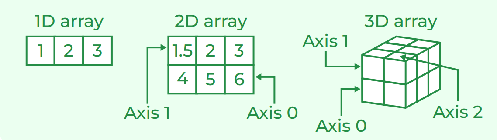

The NumPy library is the core library for scientific computing in Python. It provides a high-performance multidimensional array object, and tools for working with these arrays.
orIt is one of the most important foundational packages for numerical computing & data analysis in Python. Most computational packages providing scientific functionality use NumPy’s array objects as the lingua franca for data exchange.
>>> import numpy as np

| Meaning | Explenation |
|---|---|
| From Python List | np.array([1, 2, 3, 4, 5]) |
| From Python Tuple | np.array((1, 2, 3, 4, 5)) |
| fromiter() function | np.fromiter((a for a in range(8)), float) |
Example👇
li = [1, 2, 3, 4]
print(np.array(li))
tup = (5, 6, 7, 8)
print(np.array(tup))
iterable = (a for a in range(8))
print(np.fromiter(iterable, float))
| Meaning | Explenation |
|---|---|
| Using Python Lists | np.array([[1, 2, 3, 4],[5, 6,7, 8], [9, 10, 11, 12]]) |
| Using empty() | np.empty([4, 3], dtype=int) |
Example👇
list_1 = [1, 2, 3, 4]
list_2 = [5, 6, 7, 8]
list_3 = [9, 10, 11, 12]
print(np.array([list_1, list_2, list_3]))
print(np.empty([4, 3], dtype=int))
| Meaning | Explenation |
|---|---|
| arange() | np.arange(1, 10) |
| linespace() | np.linspace(1, 10, 3) |
| zeros() | np.zeros(5, dtype=int) |
| ones() | np.ones(5, dtype=int) |
| random.rand() | np.random.rand(5) |
| random.randint() | np.random.randint(5, size=10) |
Example👇
print(np.arange(1, 10))
print(np.linspace(1, 10, 3))
print(np.zeros(5, dtype=int))
print(np.ones(5, dtype=int))
print(np.random.rand(5))
print(np.random.randint(5, size=10))
| Meaning | Explenation |
|---|---|
| zeros() | np.zeros([4, 3], dtype = np.int32) |
| ones() | np.ones([4, 3], dtype = np.int32) |
| full() | np.full([2, 2], 67, dtype = int) |
| eye() | np.eye(4) |
Example👇
print(np.arange(1, 10))
print(np.ones([4, 3], dtype = np.int32))
print(np.full([2, 2], 67, dtype = int))
print(np.eye(4))
| Meaning | Explenation |
|---|---|
| Size | arr.size |
| Length | len(arr) |
| Shape | arr.shape |
| Datatype | arr.dtype |
| Changing Datatype of Array | arr.astype('float64') |
| Converting Array to List | arr.tolist() |
| Meaning | Explenation |
|---|---|
| Saving array on disk | np.save("file", np.arange(5)) |
| Loading a file | np.load("file.npy") |
| Importing a Text File | np.loadtxt('file.txt') |
| Importing CSV File | np.genfromtxt('file.csv' delimiter=',') |
| Write Text File | np.savetxt('file.txt',arr delimiter=' ') |
| Meaning | Explenation |
|---|---|
| Signed 64-bit integer types | np.int64 |
| Standard double-precision floating point | np.float32 |
| Complex numbers represented by 128 floats | np.complex |
| Boolean type storing TRUE & FALSE values | np.bool |
| Python object type | np.object |
| Fixed-length string type | np.string_ |
| Fixed-length unicode type | np.unicode_ |
| Meaning | Explenation |
|---|---|
| Sorting 1D Array | arr.sort() |
| Sorting along the first axis of the 2D array | np.sort(a, axis = 0) |
Adding the values at the end.
print("Original Array:", arr)
arr = np.append(arr, [7])
print("Array after appending:", arr)
Original Array:
[[ 1. 2. 3. 4.]
[ 5. 6. 7. 8.]
[ 9. 10. 11. 12.]]
Array after appending:
[ 1. 2. 3. 4. 5. 6. 7. 8. 9. 10. 11. 12. 7.]
Adding the values at the end
arr = np.arange(1, 13).reshape(2, 6)
print("Original Array")
print(arr, "\n")
col = np.arange(5, 11).reshape(1, 6)
arr_col = np.append(arr, col, axis=0)
print("Array after appending the values
column wise")
print(arr_col, "\n")
row = np.array([1, 2]).reshape(2, 1)
arr_row = np.append(arr, row, axis=1)
print("Array after appending the values row wise")
print(arr_row)
Original Array:
[[ 1 2 3 4 5 6]
[ 7 8 9 10 11 12]]
Array after appending the values column wise:
[[ 1 2 3 4 5 6]
[ 7 8 9 10 11 12]
[ 5 6 7 8 9 10]]
Array after appending the values row wise:
[[ 1 2 3 4 5 6 1]
[ 7 8 9 10 11 12 2]]
arr = np.asarray([1, 2, 3, 4])
print("1D arr:", arr)
print("Shape:", arr.shape)
a = np.insert(arr, 1, 9)
print("\nArray after insertion:", a)
print("Shape:", a.shape)
Python Program illustrating.
print("Original arr:", arr)
print("Shape : ", arr.shape)
object = 2
a = np.delete(arr, object)
print("\ndeleteing the value at index {} from
array:\n {}".format(object,a))
print("Shape : ", a.shape)
array = np.array([1, 2, 3, 4, 5, 6, 7, 8, 9, 10, 11, 12, 13, 14, 15, 16])
print("Array: " + str(array))
-Converting it to 2-D from 1-D array.
reshaped1 = array.reshape((4, array.size//4))
-printing reshaped array.
print("First Reshaped Array:")
print(reshaped1)
-creating another reshaped array.
reshaped2 = np.reshape(array, (2, 8))
-printing reshaped array.
print("\nSecond Reshaped Array:")
print(reshaped2)
Numpy arrays can be resized using the resize() function. It returns nothing but changes the original array.
arr = np.array([1, 2, 3, 4, 5, 6])
arr.resize(3, 4)
print(arr)
list_1 = [1, 2, 3, 4]
list_2 = [5, 6, 7, 8]
arr = np.array([list_1, list_2])
print(arr.flatten())
gfg = np.array([[1, 2],
[4, 5],
[7, 8]])
print(gfg, end ='\n\n')
print(gfg.transpose(1, 0))
| Meaning | Explenation |
|---|---|
| Combining Arrays. | np.concatenate((arr1, arr2), axis = 0) |
| Splitting array. | np.split(arr, 3, 1) |
| Horizontal Split. | np.hsplit(arr, 3) |
| Vertical Split. | np.vsplit(a, 3) |
print(arr)
print("Elements are:", arr[np.array([1, 3, -3])])
print(arr)
print("a[-2:7:1] = ",arr[-2:7:1])
print("a[1:] = ",arr[1:])
Numpy array indexing is of two types: Integer indexing and Boolean indexing.
a = np.array([[1 ,2 ],[3 ,4 ],[5 ,6 ]])
print(a[[0 ,1 ,2 ],[0 ,0 ,1]])
a = np.array([10, 40, 80, 50, 100])
print(a[a>50])
| Meaning | Explenation |
|---|---|
| Coping to new memory space. | arr.copy() |
| Shallow Copy. | arr.view() |
| Meaning | Explenation |
|---|---|
| Adds elements of 2 Array. |
np.add(a, b) |
| Substracts elements of 2 Array. |
np.subtract(a, b) |
| Multiply elements of 2 Array. |
np.multiply(a, b) |
| divide elements of 2 Array. |
np.divide(a, b) |
| Modulo elements of 2 Array. |
np.mod(a, b) |
| Remainder elements of 2 Array. |
np.remainder(a,b) |
| Power elements of 2 Array. |
np.power(a, b) |
| Exponant elements of 2 Array. |
np.exp(b) |
an_array = np.array([[1, 2], [3, 4]])
another_array = np.array([[1, 2], [3, 4]])
comparison = an_array == another_array
equal_arrays = comparison.all()
print(equal_arrays)
arr = np.array([.5, 1.5, 2.5, 3.5, 4.5, 10.1])
print("Original arr:", arr)
print("Shape : ", arr.shape)
print("Square-root:", np.sqrt(arr))
print("Log Value: ", np.log(arr))
print("Absolute Value:", np.absolute(arr))
print("Sine values:", np.sin(arr))
print("Ceil values:", np.ceil(arr))
print("Floor Values:", np.floor(arr))
print ("Rounded values:", np.round_(arr)).
print("Original arr:", arr)
print("Shape : ", arr.shape)
arr = [20, 2, 7, 1, 34]
print("mean of arr:", np.mean(arr))
print("median of arr:", np.median(arr))
print("Sum of arr(uint8):",
np.sum(arr, dtype = np.uint8))
print("Sum of arr(float32):",
np.sum(arr, dtype = np.float32))
print("maximum element:", np.max(arr))
print("minimum element:", np.min(arr))
print("var of arr:", np.var(arr))
print("var of arr(float32):",
np.var(arr, dtype = np.float32))
print("std of arr:", np.std(arr))
print ("More precision with float32",
np.std(arr, dtype = np.float32))
Create numpy 1d-array.
array1 = np.array([0, 1, 2])
array2 = np.array([3, 4, 5])
-coefficients of the arrays
rslt = np.corrcoef(array1, array2)
print(rslt)
[[1. 1.]
[1. 1.]]
© All Copyright 2024 by coding_by_teju